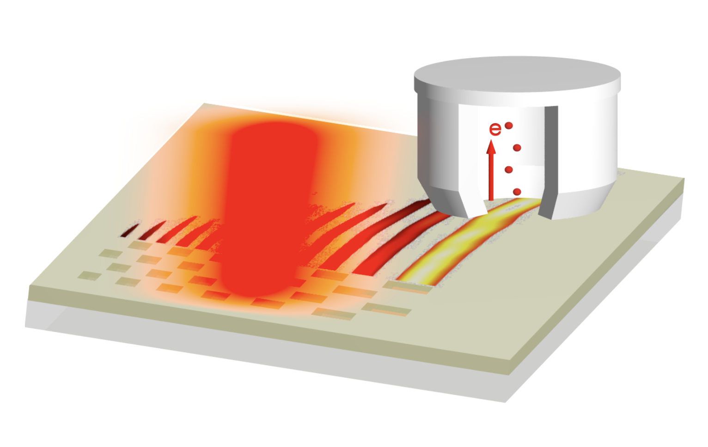

From source physics to illumination performance
Modelling and validating optical architectures, source behaviour, beam propagation, and design sensitivities for demanding applications.
I work across photonics, semiconductor equipment, industrialization, and intelligent automation—turning rigorous analysis into systems that perform reliably in the real world.
My work connects modelling, experimentation, system behaviour, and operational decisions.
Modelling and validating optical architectures, source behaviour, beam propagation, and design sensitivities for demanding applications.
Connecting design, factory, and service perspectives to improve qualification, diagnostics, availability, and knowledge transfer.
Exploring practical workflows that combine simulation data, domain knowledge, automation, and compact language models.
From nanoscale electromagnetic fields to large industrial systems, the common thread is understanding how individual decisions shape total-system performance.
A rigorous base in wave optics, metrology, modelling, and experimentation.
PhD research on the spatiotemporal dynamics of non-diffracting plasmonic pulses.
Cross-functional design and industrialization work on highly complex lithography equipment.
Developing optical solutions while expanding into smart manufacturing and AI-enabled engineering.
“Build systems that last—not only in uptime, but in relevance and impact.”
I combine engineering depth with process insight. That means working from first principles, challenging assumptions with data, and designing solutions that remain understandable and useful beyond the first successful prototype.

My doctoral research investigated how ultrashort Airy plasmon pulses propagate across structured metal–dielectric interfaces. The work combined large-scale FDTD simulation with analytical and experimental approaches.
It strengthened the method I still use today: break a complex physical system into testable questions, select the right model, and connect numerical results to measurable behaviour.
FDTD, FEM, BPM, ray tracing, beam shaping, optical metrology
Qualification, troubleshooting, root-cause analysis, reliability
Python, MATLAB, numerical modelling, analysis, visualization
Smart manufacturing, technology roadmapping, AI workflows